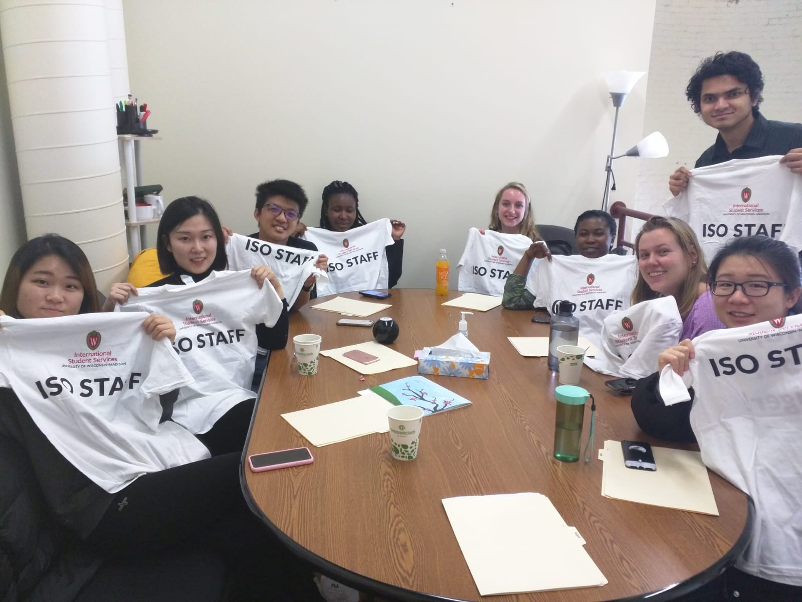

EDUCATION
MS Candidate in Agricultural and Applied Economics GPA 3.6/4.0 University of Wisconsin Madison
August 2018-May 2020(Expected)MA in International Business GPA 3.6/4.0 Renmin University of China
September 2017-July 2019BS in Finance and Mathematics (double major) GPA 3.5/4.0 University of JiNan September 2012-July 2016
INTERNSHIP EXPERIENCES
- Intern Analyst, Deloitte Consulting LLP
December 2017-April 2018
- Collaborated with team members to successfully deliver Deloitte’s Human Resource Consulting services for several Fortune 500 clients across industries.
- Conducted a talent-assessing project for an online-shopping company with a data-driven and evidence-based method. Provided customized development planning and succession pipeline.
- Assessed the maturity level of organizations’ leadership capabilities with VLOOKUP and PivotTable in Excel.
- Conducted a job responsibilities optimization project for a business management group. Diagnosed group processes and collaborative capabilities. Delivered a department working flowchart with VISIO to optimize the working process for an 18% time reduction.
- Designed the guidance of working procedures for interns resulting in 25% redundancy reduction.
- Accounting Assistant Intern, Trust Financial Department, CITIC TrustCo., Ltd September 2017- December 2017
- Assisted with research, filing, data entry, and recording and maintaining accurate and complete financial records.
- Preparing financial reports, such as balance sheets and income statements, invoices, and other documents.
- Intern Analyst, Strategy Development, Yingda International Trust Co., Ltd
July 2017-September 2017
- Grabbed the 68 local trust companies’ semi-yearly financial data with MySQL.
- Created a report to analyze the performance compared with other trust companies, summarized the discoveries into actionable business tactics with data visualization by python and presented it to the management team.
Extracurricular activities
- Orientation Assistant @ UWM International Student Services January 2020
Working as an Orientation Assistant for International Student services during International Student Orientation.
Welcomed and assisted around 1860 new international students each year with colleagues to help them with check-in and document preparations.
Be a UW Representative in helping the new students in their transition to UW-Madison.
Present and share personal experiences about being a student at UW-Madison
- Student Catering @ Wisconsin Union September 2019 - Now
Provide overall support for catering events.
Demonstrated the high standard customer service to respond to requests and concerns in a fast-paced environment.

Contacts
- Email naixinzhang1104@gmail.com nzhang228@wisc.edu
- Address 437 N Frances St, Madison, WI 53703